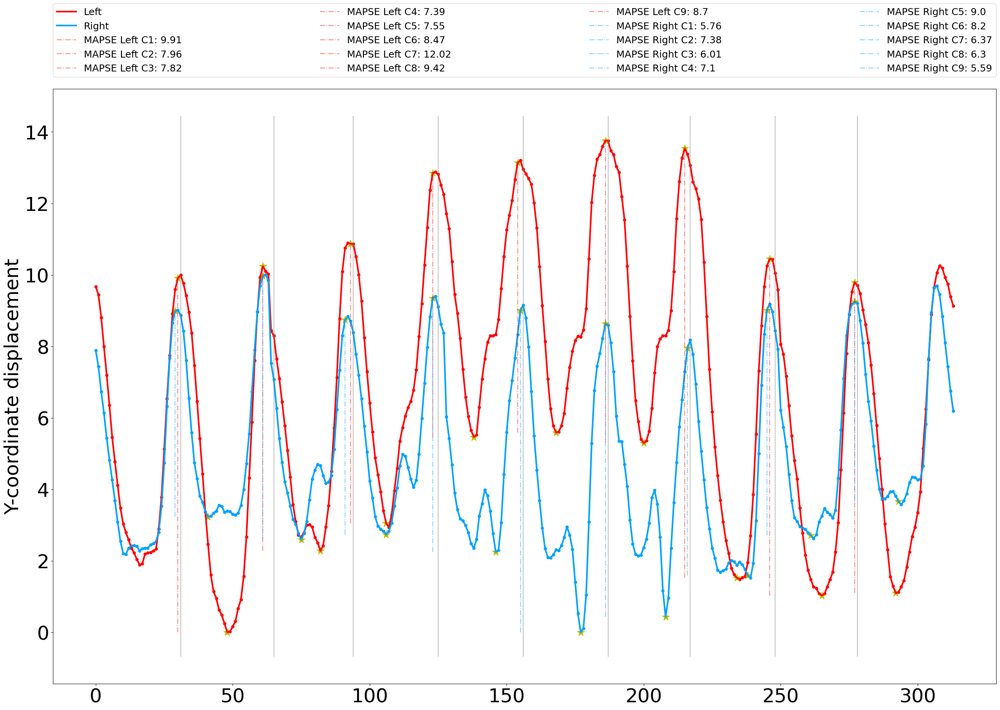
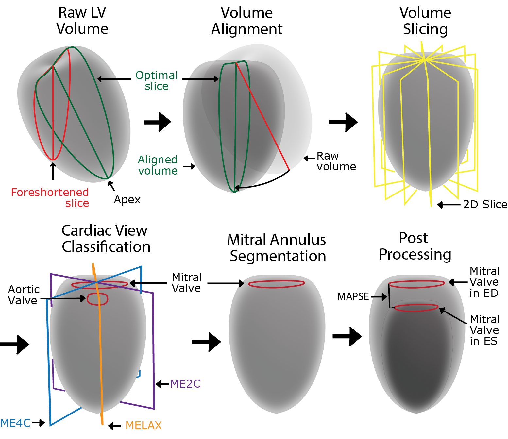
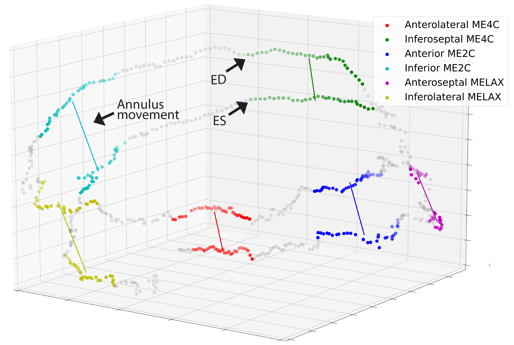

Projects
Description of projects developed in relation to my Ph.D. with prediction examples and pipeline figures.
AutoMAPSE 2D
Global LV function estimation by 2D TEE for critically ill patients
Objective: Evaluation of left ventricular (LV) function in critical care patients is useful to guide therapy and for the early detection of LV dysfunction, but the tools currently available are too time-consuming. To resolve this issue, we previously proposed a method for the continuous and automatic quantification of global LV function in critical care patients, based on the detection and tracking of anatomical landmarks in transesophageal heart ultrasound. In the present study, our aim was to improve the performance of mitral annulus detection in transesophageal echocardiography (TEE).
Methods: We investigated several state-of-the-art networks for both the detection and tracking of the mitral annulus in TEE. We integrated the networks into a pipeline for automatic assessment of LV function through estimation of the mitral annular plane systolic excursion (MAPSE), named autoMAPSE. TEE recordings from a total of 245 patients were collected from St. Olavs University Hospital and used to train and test the respective networks. We evaluated the agreement between autoMAPSE estimates and manual references annotated by expert echocardiographers in 30 Echolab patients and 50 critical care patients. Furthermore, we proposed a prototype of autoMAPSE for clinical integration and tested it in critical care patients in the intensive care unit.
Results: Compared to manual references, we achieved a mean difference of 0.8 (95% limits of agreement: -2.9 to 4.7) mm in Echolab patients, with a feasibility of 85.7%. In critical care patients, we reached a mean difference of 0.6 (95% limits of agreement: -2.3 to 3.5) mm and a feasibility of 88.1%. The clinical prototype of autoMAPSE achieved real-time performance.
Conclusion: Automatic quantification of the LV function shows high feasibility in clinical settings. The agreement with manual references was comparable to interobserver variability of clinical experts.
Tasken et al., Automatic Detection and Tracking of Anatomical Landmarks in Transesophageal Echocardiography for Quantification of Left Ventricular Function, Accepted for Ultrasound in Medicine and Biology, 2024
AutoMAPSE 3D
Fully auomatic estimation of global LV function by 3D TEE for critically ill patients
Perioperative monitoring of cardiac function is beneficial for early detection of cardiovascular complications. The standard of care for cardiac monitoring performed by trained cardiologists and anesthesiologists involves a manual and qualitative evaluation of ultrasound imaging, which is a time-demanding and resource-intensive process with intraobserver- and interobserver variability. In practice, such measures can only be performed a limited number of times during the intervention. To overcome these difficulties, this study presents a robust method for automatic and quantitative monitoring of cardiac function based on 3D transesophageal echocardiography (TEE) B-mode ultrasound recordings of the left ventricle (LV). Such an assessment obtains consistent measurements and can produce a near real-time evaluation of ultrasound imagery. Hence, the presented method is time-saving and results in increased accessibility. The mitral annular plane systolic excursion (MAPSE), characterizing global LV function, is estimated by landmark detection and cardiac view classification of two-dimensional images extracted along the long-axis of the ultrasound volume. MAPSE estimation directly from 3D TEE recordings is beneficial since it removes the need for manual acquisition of cardiac views, hence decreasing the need for interference by physicians. Two convolutional neural networks (CNNs) were trained and tested on acquired ultrasound data of 107 patients, and MAPSE estimates were compared to clinically obtained references in a blinded study including 31 patients. The proposed method for automatic MAPSE estimation had low bias and low variability in comparison to clinical reference measures. The method accomplished a mean difference for MAPSE estimates of (-0.16 ± 1.06) mm. Thus, the results did not show significant systematic errors. The obtained bias and variance of the method were comparable to inter-observer variability of clinically obtained MAPSE measures on 2D TTE echocardiography. The novel pipeline proposed in this study has the potential to enhance cardiac monitoring in perioperative- and intensive care settings.
Tasken et al., Automated estimation of mitral annular plane systolic excursion by artificial intelligence from 3D ultrasound recordings, Artificial Intelligence in Medicine, Volume 144, October 2023
The autoMAPSE 3D pipeline consist of 4 steps. 
- The first step is to align the left ventricle along the long axis. The long axis is the axis of the left ventricle from the apex to the center of the basal plane. We align the volume in order to minimize foreshortening, reduce geometric distortion and avoid out of plane movement. We propose a 3D CNN to predict the angle of the long axis. We slice the volume about the x- and y-axis into 60 images, and the CNN predicts the image with the longest ventricle. The problem is resolved as a regression problem by predicting a Gaussian curve, where the peak of the curve corresponds to the image with the longest ventricle.
- The second step is to classify the standard cardiac views of the ventricle. By slicing the volume about the long axis, we detect the 2C-, 4C- and LAX views. Hence, we obtain a complete orientation of the volume. A 3D CNN was designed to predict the slice closest to the cardiac view. Similar to the alignment of the ventricle, we solved this problem through regression.
- The third step is to segment the mitral ring in 3D. The ventricle is sliced about the long axis into 2D images, and the mitral ring is detected in each image by a landmark detection network. The detected landmarks are transformed to 3D space, and a discrete 3D segmentation of the mitral ring is obtained for all volumes in the cardiac cycle.
- The fourth and last step involves the final estimation of the MAPSE measure. We compute the excursion of the mitral ring along the long axis through the cardiac cycle. A set of filtering operations are performed to increase the stability and robustness of the method.

AutoStrain and synTEE
Regional LV function estimation by 2D TEE for critically ill patients
Segmental longitudinal strain (SLS) of the left ventricle is an important prognostic indicator in critically ill patients undergoing cardiac surgery and intensive care for the detection of myocardial infarctions. Unfortunately, manual strain measurements are too resource-intensive for the monitoring of critically ill patients. In the present study, we proposed a method for automatic estimation of regional LV function by predicting segmental SLS in critically ill patients by transesophageal echocardiography (TEE). We proposed a RAFT-based neural network for optical flow estimation named EchoFlow, to estimate myocardial motion in TEE. We adopted the SIMUS simulation pipeline to generate synthetic TEE data with ground-truth references of the myocardial motion through the cardiac cycle to train EchoFlow. We trained our EchoFlow network on a subset of the synthetic data and tested EchoFlow on the remaining synthetic data. We evaluated the EchoFlow performance by providing a myocardial mesh for the first frame, warping the mesh based on the estimated dense displacement field and comparing the mesh position with ground truth references for all frames of the recording. We integrated the network into a pipeline for SLS computation. We generated realistic synthetic TEE B-mode ultrasound images of 80 patients. EchoFlow achieved an end-point-error between estimated and reference flow fields of 0.03 mm, and a mean distance of 2.3 mm between the estimated and reference myocardial meshes. Our autoStrain pipeline automatically estimated SLS on the test data. Evaluating against ground truth measures, we achieved a mean distance (95% limits of agreement) of -2.2 (-11.0 to 6.5)%. Our EchoFlow network showed promising results for precise motion estimation in TEE. Our autoStrain pipeline demonstrated EchoFlow's ability to estimate the SLS of the left ventricle in TEE.
Tasken et al., Automatic Estimation of Segmental Longitudinal Strain by Artificial Intelligence in Transesophageal Echocardiography, The Seventh Annual MMIV Conference, Desember 2023